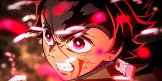

About Tanjiro
Tanjiro Kamado (Japanese: 竈門 炭治郎, Hepburn: Kamado Tanjirō) is a fictional character and the main protagonist in Koyoharu Gotouge's manga Demon Slayer: Kimetsu no Yaiba. Tanjiro is a teenager who goes on a quest to restore the humanity of his sister, Nezuko, who was turned into a demon after his family was killed by Muzan Kibutsuji following an attack that resulted in the death of his other relatives. After an encounter with Giyu Tomioka, a demon slayer, Tanjiro is recruited by Giyu to also become a demon slayer to help his sister turn human again and avenge his family. Besides Ufotable's Demon Slayer: Kimetsu no Yaiba anime adaptation, Tanjiro has also appeared in a light novel that acts as a prequel to the manga.
Here is some fighting scenes of Kamado Tanjiro
Click here to see the fight.Tanjiro's Characteristics
- He is got Water and Sun breathing techniques
- He is very kind.
- He is very powerful when he gets serious
- Also his sister is a demon.